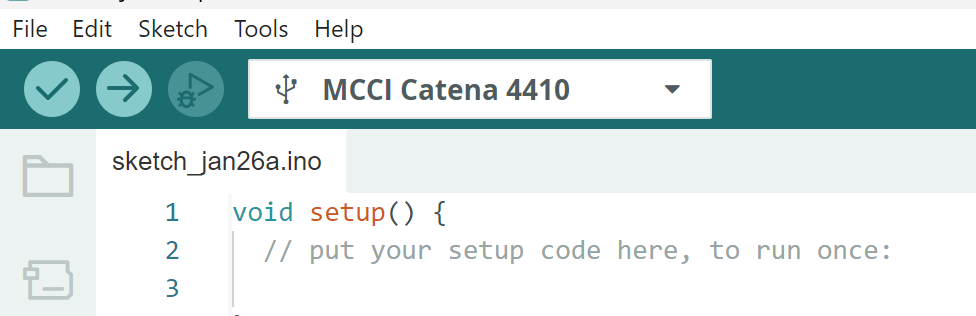
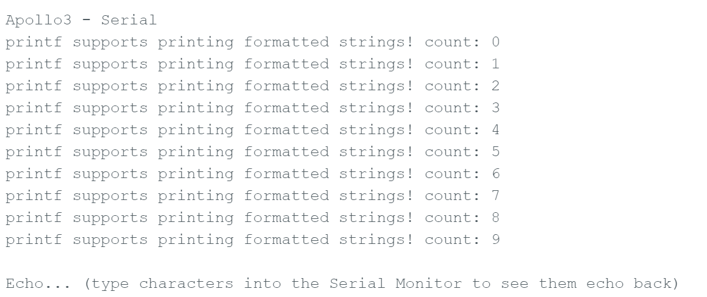
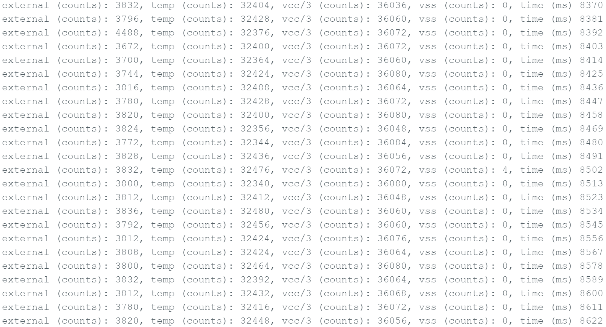
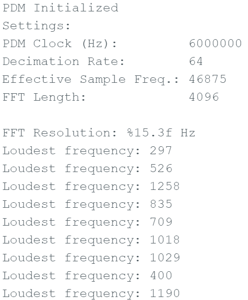
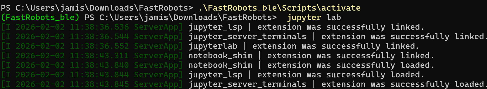

Lab 1: The Artemis board and Bluetooth
Prelab 1A: Hook Up Artemis Board
Before starting the BLE portion, I verified that my Artemis could reliably upload code, print to Serial, and read onboard sensors using the built-in example sketches.
1) Connect + Select Board/Port
- Connected the Artemis to my computer via USB and confirmed a stable physical connection.
- In Arduino IDE, selected Board: RedBoard Artemis Nano and the correct Port.
- At "Basic Examples" I will be doing multiple board checks to make sure my board works as it should..

2) Basic Examples



Prelab 1B: Preparing my Computer
Lab 1B focuses on establishing Bluetooth communication between your computer and the Artemis board. Using Python commands sent from a Jupyter notebook, the computer will communicate with an Artemis board programmed and displayed in Arduino. This lab also sets up a reusable framework for transmitting data from the Artemis back to the computer over Bluetooth, which will used in later labs.
1) Jupiter Notebook
Down below is my command prompt showing my FastRobots folder being activated and then opening Jupyter Notebook, to then complete the Lab tasks in the latter sections.

Lab Tasks
For each task below, I included evidence (serial output, Jupyter logs, plots, photos, or videos) to show the system works.
Task 1 — ECHO command (string in → augmented string out)
BLE[Explain what you sent, what the Artemis returned, and how you verified it.]
case ECHO:
char char_arr[MAX_MSG_SIZE];
// Extract the next value from the command string as a character array
success = robot_cmd.get_next_value(char_arr);
if (!success)
return;
Serial.print("Board: ");
Serial.print(char_arr);
Serial.println(".");
break;
Task 2: SEND_THREE_FLOATS
BLE
case SEND_THREE_FLOATS:
float flo_a, flo_b, flo_c;
success = robot_cmd.get_next_value(flo_a);
if (!success)
return;
// Extract the next value from the command string as an integer
success = robot_cmd.get_next_value(flo_b);
if (!success)
return;
success = robot_cmd.get_next_value(flo_c);
if (!success)
return;
Serial.print("Don't play with me! I'm not the '");
Serial.print(flo_a);
Serial.print("', or the '");
Serial.print(flo_b);
Serial.print("', or the '");
Serial.print(flo_c);
Serial.println(". Today is not that day!");
break;
[Explain how you formatted the message and extracted floats in Arduino.]
Task 3 — GET_TIME_MILLIS (reply like “T:123456”)
Timing
[Explain command + output format + sample replies.]
Evidence
[Screenshot of messages showing T:xxxxx]
Task 4 — Python notification handler (extract time from string)
Python
[Describe callback function + parsing logic.]
Evidence
[Snippet of handler output or screenshot]
Task 5 — Stream timestamps for a few seconds (data rate)
Plot
[Explain how you collected timestamps and computed effective rate (msgs/sec or bytes/sec).]
Plot / Figure
[Insert plot image or screenshot]
Task 6 — Store timestamps in an array; SEND_TIME_DATA dumps later
Buffering
[Explain array size, how you avoid overflow, and how SEND_TIME_DATA transmits it.]
Evidence
[Python list shows all values received / count matches]
Task 7 — Add temperature array; GET_TEMP_READINGS sends paired data
Sensors
[Explain: timestamp[i] matches temp[i], parsing format, and how you verified it.]
Evidence
[Plot temp vs time or screenshot of parsed lists]
Task 8 — Discussion of the two data methods (pros/cons + memory estimate)
Analysis
[Discuss streaming vs buffering: overhead, reliability, timing resolution, and how much RAM is usable.
Include: how “quickly” method 2 records data + estimate max data before running out of memory.]
5000-Level Analysis (if applicable)
Effective Data Rate + Overhead
[Send a message from computer → receive reply. Record times. Calculate data rate for 5-byte replies and 120-byte replies.
Include at least one plot. Discuss overhead vs packet size.]
Plot placeholder
[Data rate vs payload size]
Reliability
[What happens at higher publish rates? Do you miss packets? How do you know? Include evidence.]
Discussion
[Keep this short: what you learned, biggest challenges, and how you fixed them.
Mention any unique debugging steps or improvements you made.]
Optional Video Evidence
Code Snippets (Relevant Only)
The goal here is to include only the key functions / handlers. Do not paste your entire codebase.
Use GitHub Gists or link to your repo if needed.
Arduino: command parsing / handlers
// Paste ONLY the relevant functions:
// - ECHO handler
// - SEND_THREE_FLOATS handler
// - GET_TIME_MILLIS handler
// - buffer + SEND_TIME_DATA / GET_TEMP_READINGS handlers
Python: BLE notification handler
# Paste ONLY your notification callback + parsing logic
# and the collection loop (timestamps / temp)